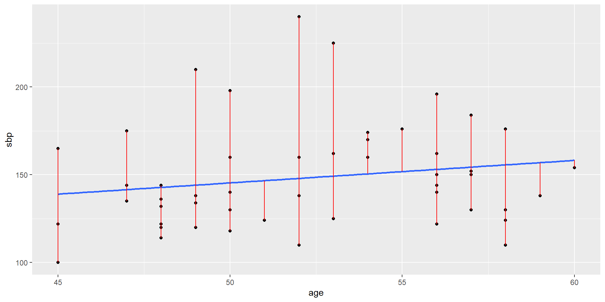
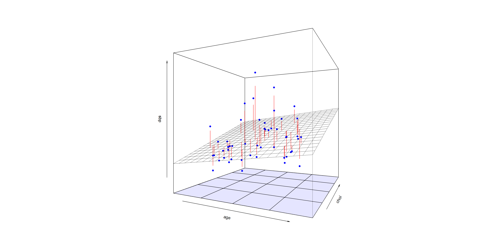
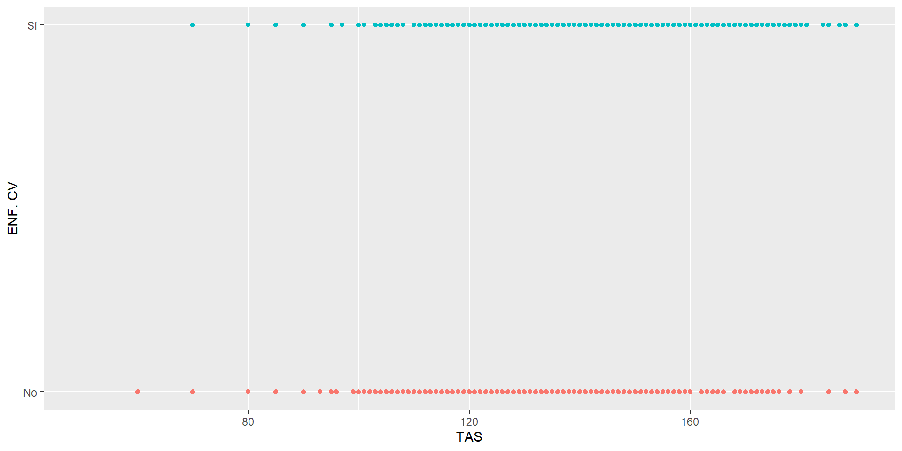
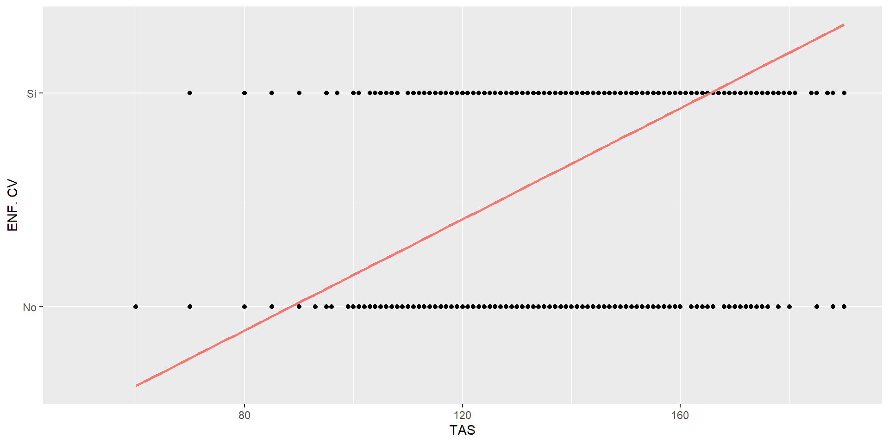
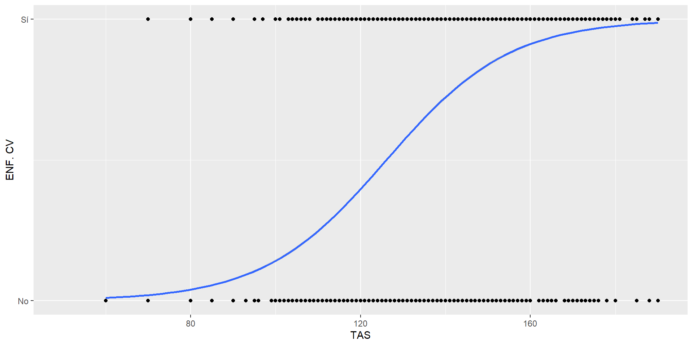
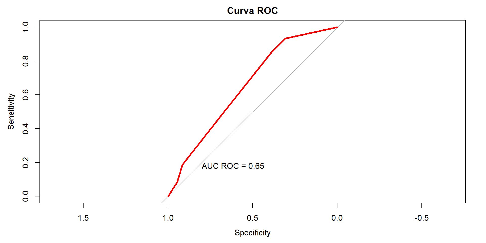

| sbp | ||||
| Predictors | Estimates | std. Error | CI | p |
| (Intercept) | 94.05 | 8.16 | 78.05 – 110.05 | <0.001 |
| age | 1.03 | 0.16 | 0.72 – 1.33 | <0.001 |
| Observations | 1363 | |||
| R2 / R2 adjusted | 0.031 / 0.030 | |||
INTRO Regresion Logistica
Diego Halac
PREDICCION
CLASES → CLASIFICACION
VALORES NUMERICOS → REGRESION
TIEMPO AL EVENTO → SOBREVIDA (COX)
CONTEO → POISSON
PROPORCIONES → BETA
Repaso RAPIDO de Regresion Lineal
Modelo de Regresion Lineal
- Supuesto: Relacion Lineal entre las Variables \(X\) e \(Y\).
- Medida de resultado: Media Estimada de \(Y\)
- Modelo: \(E(Y) =\) \(\beta_0\) + \(\beta_1\) \(X_1\) + …. \(\beta_p\) \(X_p\)
- \(\beta_1\): Cambio promedio esperado del Outcome por cambio unitario en \(X_1\).
Regresion Lineal - Asociacion entre EDAD y TAS
Modelo Lineal Simple Grafico
- Que interpretamos del Efecto de la EDAD sobre La Presion Sistolica ?
Regresion Lineal Multiple
| sbp | ||||
| Predictors | Estimates | std. Error | CI | p |
| (Intercept) | 81.20 | 8.67 | 64.19 – 98.20 | <0.001 |
| age | 0.97 | 0.15 | 0.67 – 1.28 | <0.001 |
| chol | 0.07 | 0.02 | 0.04 – 0.10 | <0.001 |
| Observations | 1363 | |||
| R2 / R2 adjusted | 0.043 / 0.042 | |||
Como interpretamos el efecto de la EDAD sobre la TAS?
Que relacion existe entre EDAD y Colesterol?
Modelo Lineal Multipe Grafico
Regresion Logistica
Que Modelo Elegirian para explicar esta distribucion de Datos?
Esto parece ser correcto ?
O tiene mas logica algo asi ?
Regresion Logistica
Se utiliza cuando la variable Dependiente es Dicotomica
\(Y = SI (evento)\), o \(Y = NO (No\;evento)\)
Resultado = PROBABILIDAD DE \(Y = SI\).
Antes de Continuar…
- Relación \(odds\) - \(Risesgo\):
\(Riesgo\;=\; \frac{odds}{odds+1}\)
\(Odds\;=\; \frac{Riesgo}{1-Riesgo}\)
\(Riesgo := Probabilidad\)
Si un evento es prevalente, el \(odds\) es mas grande que la probabilidad.
Si un evento No es prevalente, el \(odds\) es similar a la probabilidad.
ODDS-RIESGO…
| Prob | odds |
|---|---|
| 0.01 | 0.010 |
| 0.02 | 0.020 |
| 0.03 | 0.031 |
| 0.04 | 0.042 |
| 0.05 | 0.053 |
| 0.06 | 0.064 |
| 0.07 | 0.075 |
| 0.08 | 0.087 |
| 0.09 | 0.099 |
| 0.10 | 0.111 |
| 0.11 | 0.124 |
| 0.12 | 0.136 |
| 0.13 | 0.149 |
| 0.14 | 0.163 |
| 0.15 | 0.176 |
| 0.16 | 0.190 |
| 0.17 | 0.205 |
| 0.18 | 0.220 |
| 0.19 | 0.235 |
| 0.20 | 0.250 |
| 0.21 | 0.266 |
| 0.22 | 0.282 |
| 0.23 | 0.299 |
| 0.24 | 0.316 |
| 0.25 | 0.333 |
| 0.26 | 0.351 |
| 0.27 | 0.370 |
| 0.28 | 0.389 |
| 0.29 | 0.408 |
| 0.30 | 0.429 |
| 0.31 | 0.449 |
| 0.32 | 0.471 |
| 0.33 | 0.493 |
| 0.34 | 0.515 |
| 0.35 | 0.538 |
| 0.36 | 0.563 |
| 0.37 | 0.587 |
| 0.38 | 0.613 |
| 0.39 | 0.639 |
| 0.40 | 0.667 |
| 0.41 | 0.695 |
| 0.42 | 0.724 |
| 0.43 | 0.754 |
| 0.44 | 0.786 |
| 0.45 | 0.818 |
| 0.46 | 0.852 |
| 0.47 | 0.887 |
| 0.48 | 0.923 |
| 0.49 | 0.961 |
| 0.50 | 1.000 |
| 0.51 | 1.041 |
| 0.52 | 1.083 |
| 0.53 | 1.128 |
| 0.54 | 1.174 |
| 0.55 | 1.222 |
| 0.56 | 1.273 |
| 0.57 | 1.326 |
| 0.58 | 1.381 |
| 0.59 | 1.439 |
| 0.60 | 1.500 |
| 0.61 | 1.564 |
| 0.62 | 1.632 |
| 0.63 | 1.703 |
| 0.64 | 1.778 |
| 0.65 | 1.857 |
| 0.66 | 1.941 |
| 0.67 | 2.030 |
| 0.68 | 2.125 |
| 0.69 | 2.226 |
| 0.70 | 2.333 |
| 0.71 | 2.448 |
| 0.72 | 2.571 |
| 0.73 | 2.704 |
| 0.74 | 2.846 |
| 0.75 | 3.000 |
| 0.76 | 3.167 |
| 0.77 | 3.348 |
| 0.78 | 3.545 |
| 0.79 | 3.762 |
| 0.80 | 4.000 |
| 0.81 | 4.263 |
| 0.82 | 4.556 |
| 0.83 | 4.882 |
| 0.84 | 5.250 |
| 0.85 | 5.667 |
| 0.86 | 6.143 |
| 0.87 | 6.692 |
| 0.88 | 7.333 |
| 0.89 | 8.091 |
| 0.90 | 9.000 |
| 0.91 | 10.111 |
| 0.92 | 11.500 |
| 0.93 | 13.286 |
| 0.94 | 15.667 |
| 0.95 | 19.000 |
| 0.96 | 24.000 |
| 0.97 | 32.333 |
| 0.98 | 49.000 |
| 0.99 | 99.000 |

SIGAMOS …
Modelamos la probabilidad del evento \(p(y)\) en función de las covariables \((x_1, x_2, x_3....x_n)\) .
\(p(y) = \frac{e^{\beta_0 + \beta_1 X_1 + .... \beta_p X_p}}{1+e^{\beta_0 + \beta_1 X_1 + .... \beta_p X_p}}\)
INTERPRETABILIDAD
GLM - ¿COMO LO HACEMOS PARECER UNA REGRESION LINEAL?
\(probabilidad\) toma valores entre 0 y 1 → debemos interponer una función que permita mapear los números reales (son los resultados del componente lineal \(\beta_0\) + \(\beta_1\) \(X_1\) + …. \(\beta_p\) \(X_p\)), en el espacio entre 0 y 1.
O sea: ubicar los valores que van de \(0\) a \(1\) en un espacio entre - ∞ y + ∞
LOGIT
Esta función interpuesta se conoce como función \(Link\) y la que mas frecuentemente se utiliza es la función \(logit\) .
\(p(y) = \frac{e^{\beta_0 + \beta_1 X_1 + .... \beta_p X_p}}{1+e^{\beta_0 + \beta_1 X_1 + .... \beta_p X_p}}\)
\({\frac{p}{1-p}} =\) \(e^{\beta_0 + \beta_1 X_1 + .... \beta_p X_p}\)
\(odds =\) \(e^{\beta_0 + \beta_1 X_1 + .... \beta_p X_p}\)
\(logodds =\) \({\beta_0 + \beta_1 X_1 + .... \beta_p X_p}\)
Entonces…
- En lugar de proponer que existe una relacion \(LINEAL\) entre la probabilidad y Los Predictores, decimos que existe una relacion \(LINEAL\) entre el \(logit(prob)\; y\; X = logodds(prob)\; y\; X\)
Que pasa con factores de riesgo categoricos ?
La comparacion de MEDIAS o RANGOS es la opcion de analisis mas comun cuando se quiere evaluar la relacion entre una variable continua y un evento dicotomico, en el caso de que se trate de dos variables dicotomicas, la tabla de contingencia con sus medidas de efecto asociadas serian la herramienta de eleccion.
Si existiera una tercer variable que pudiera confundir esta relacion, el analisis estratificado seria una alternativa para controlar ese efecto.
El problema del analisis Multivariado ocurre cuando la estratificacion progresiva resulta en \(n\) pequeños en algunas celdas, o heterogeneidad en el \(n\) de cada celda.
EJEMPLO
Niveles de PCR e incidencia de IAM en una poblacion de 1000 pacientes seguidos durante 10 años.
PCR alta = 100 pacientes - PCR normal = 900 pacientes
Ajuste por potenciales confundidores
| Variable | Estratos - categorias |
|---|---|
| EDAD | 3 |
| SEXO | 2 |
| Colesterol | 5 |
| HTA | 3 |
| TBQ | 2 |
| Sedentarismo | 2 |
| TOTAL ESTRATOS COMBINADOS | 360 |
EJEMPLO (Cont)
El analisis multivariable permite superar esta limitacion al evaluar el impacto simultaneo de muchas variables sobre el evento, a traves de un modelo matematico .
Hagamos el analisis con una tabla de 2 x 2
| sex | newchd | Total | |
|---|---|---|---|
| 0 | 1 | ||
| 0 | 616 | 104 | 720 |
| 1 | 479 | 164 | 643 |
| Total | 1095 | 268 | 1363 |
| χ2=25.612 · df=1 · &phi=0.139 · p=0.000 | |||
| estimate | lower | upper | |
|---|---|---|---|
| 0 | 1.000000 | NA | NA |
| 1 | 2.025894 | 1.543779 | 2.668651 |
Ejemplo (cont)
\(odds\; EC\; en\; Hombres\; =\) 164/479 = 0.342
\(odds\; EC\; en\; Mujeres\; =\) 104/616 = 0.168
\(OR\; =\) 2.03
Por cada individuo SIN el evento, se espera encontrar el evento en el doble de Hombres que de Mujeres
El odds del Evento, entre hombres, es el doble que entre mujeres
Ahora ajustamos el modelo Logistico
Call:
glm(formula = newchd ~ sex, family = "binomial", data = datos)
Coefficients:
Estimate Std. Error z value Pr(>|z|)
(Intercept) -1.7789 0.1060 -16.780 < 0.0000000000000002 ***
sex 0.7070 0.1394 5.073 0.000000392 ***
---
Signif. codes: 0 '***' 0.001 '**' 0.01 '*' 0.05 '.' 0.1 ' ' 1
(Dispersion parameter for binomial family taken to be 1)
Null deviance: 1351.2 on 1362 degrees of freedom
Residual deviance: 1324.9 on 1361 degrees of freedom
AIC: 1328.9
Number of Fisher Scoring iterations: 4Se puede ver tambien ASI:
| newchd | ||||
| Predictors | Odds Ratios | std. Error | CI | p |
| (Intercept) | 0.17 | 0.02 | 0.14 – 0.21 | <0.001 |
| sex | 2.03 | 0.28 | 1.55 – 2.67 | <0.001 |
| Observations | 1363 | |||
| Deviance | 1324.865 | |||
| AIC | 1328.865 | |||
| log-Likelihood | -662.432 | |||
Modelo de Regresion Logistica Multiple
Ventajas:
Resultados facilmente interpretables y dan informacion sobre RIESGO.
Los supuestos son menos estrictos que los de Regresion Lineal.
Como todo modelo de Regresion multiple permite estudiar la relacion entre muchas variables regresoras con la variable Dependiente en forma simultanea.
Permite evaluar AJUSTE del efecto de otras variables regresoras sobre la variale de interes (DEPENDIENTE)
15 min ?

Evaluacion de Confundidores
Distribucion desigual de variables que estan relacionadas tanto a la exposicion como al evento y NO son parte del mecanismo CAUSAL
El OR ajustado estima el efecto promedio que podria esperarse si se comparan grupos que SOLO difieren en la caracteristica de interes manteniendo todas las demas constantes.
Cuando existe una diferencia importante en el OR para una variable en modelos con y sin una 3er covariable, esto indica que estamos en presencia de un confundidor.
Si el objetivo del estudio es evaluar el efecto de una variable una vez ajustado por confundidores, esta debe estar SIEMPRE incluida en el modelo independientemente de su significancia estadistica.
Estudio de Efecto Confundidor
| birth weight<2500g | birth weight<2500g | |
| Predictors | Odds Ratios | Odds Ratios |
| (Intercept) | 0.34 (0.22 – 0.51) |
0.16 (0.08 – 0.31) |
| factor(race)2 | 2.96 (1.13 – 7.81) |
|
| factor(race)3 | 3.03 (1.41 – 6.81) |
|
| smoked during pregnancy | 2.02 (1.08 – 3.80) |
3.05 (1.50 – 6.44) |
| 1=white;2=black;3=other | Reference | Reference |
| Observations | 189 | 189 |
| log-Likelihood | -114.902 | -109.987 |
Que Tan Bien Predice mi modelo ?
Evaluacion
- Comparar prediccion vs realidad.
- Matriz de confusion: REQUIERE CUT-OFF
- SENSIBILIDAD
- ESPECIFICIDAD
- VPN
- VPP
- ROC
Matriz de Confusion
Una tabla de clasificación se puede obtener definiendo un umbral de probabilidad estimada del evento como punto de corte. Uno puede elegir esa probabilidad en función del evento que esta analizando.
En este caso, uno podría definir que si la probabilidad global de bajo peso en este grupo es del 30%, yo quiero que el modelo defina como “alta probabilidad” aquellos individuos en los que la probabilidad estimada por el modelo sea = o > de 25%.
Otras medidas de Adecuacion - Clasificacion y Discriminacion
- De esta manera uno construye una tabla de 2x2 entre predichos y observados , y esto permite estimar características operativas y capacidad de clasificación del modelo.
- A partir de un punto de corte definido puedo evaluar la sensibilidad, especificidad, valores predictivos y porcentaje de clasificación correcta de las observaciones de cada modelo
Ejemplo
| prediccion | birth weight<2500g | Total | |
|---|---|---|---|
| 0 | 1 | ||
| 0 | 40 | 4 | 44 |
| 1 | 90 | 55 | 145 |
| Total | 130 | 59 | 189 |
| χ2=11.768 · df=1 · &phi=0.263 · p=0.001 | |||
Sensibilidad: 0.91Especificidad: 0.38| prediccion | birth weight<2500g | Total | |
|---|---|---|---|
| 0 | 1 | ||
| 0 | 119 | 48 | 167 |
| 1 | 11 | 11 | 22 |
| Total | 130 | 59 | 189 |
| χ2=3.161 · df=1 · &phi=0.147 · Fisher's p=0.052 | |||
Sensibilidad: 0.71Especificidad: 0.5Problemas
Estas tablas son útiles cuando nos interesa clasificar a los individuos en función de una determinada probabilidad o un punto de corte definido, pero no representan un buen método de adecuación global del modelo.
En estos casos, el uso de un umbral arbitrario colocará a individuos con probabilidades muy similares en grupos distintos, lo cual no esta en consonancia con la interpretación clínica.
De todos modos este criterio es muy utilizado en la práctica clínica ya que facilita la toma de decisiones.
Mas problemas…
Además, el uso de un solo punto de corte implica una pérdida importante de información provista por la regresión logística.
Como puede observarse, uno puede estimar la sensibilidad y especificidad para múltiples puntos de corte de probabilidad estimada por el modelo.
Esto permite construir un gráfico que relacione estas 2 características simultáneamente y así evaluar la capacidad de discriminación global del modelo…..
Curva ROC
Matriz de Sensibilidad
| SENS | ESPEC | CUTOFF |
|---|---|---|
| 1.0000000 | 0.0000000 | -Inf |
| 0.9322034 | 0.3076923 | 0.2282025 |
| 0.8474576 | 0.3923077 | 0.3220893 |
| 0.5084746 | 0.6615385 | 0.3255782 |
| 0.1864407 | 0.9153846 | 0.4576637 |
| 0.0847458 | 0.9461538 | 0.5918882 |
| 0.0000000 | 1.0000000 | Inf |
Curva ROC - Clasificacion
La curva ROC es una representación gráfica de cómo un modelo de clasificación binaria se desempeña en diferentes puntos de corte.
El AUC ROC varía entre 0 y 1, donde un valor de 0.5 indica que el modelo es tan bueno como el azar, y un valor de 1 indica que el modelo es perfecto y puede distinguir perfectamente entre las dos clases.
- El AUC ROC mide la capacidad del modelo para asignar mayor probabilidad a las observaciones con el evento en comparación con las observaciones sin el evento.
Ejemplo

Ejemplo

Ejemplo


Bibliografia BETA
BIBLIOGRAFIA